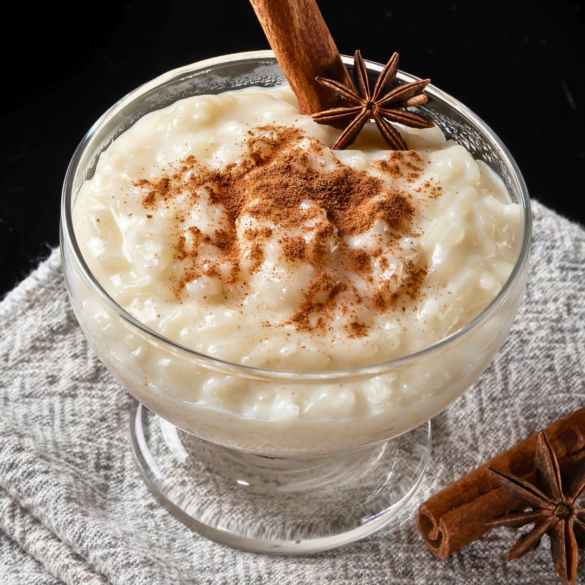

Arroz Doce
Uma sobremesa clássica, cremosa e cheia de sabor. Ideal para todas as ocasiões.
Ingredientes
- 1 xícara de arroz branco
- 1 litro de leite
- 1 lata de leite condensado
- 1 pedaço de canela em pau
- Casca de 1 limão
- 1 pitada de sal
- Canela em pó para polvilhar
Modo de Preparo
- Lave o arroz e cozinhe com 2 xícaras de água até ficar macio.
- Adicione o leite, o leite condensado, a canela em pau, a casca de limão e o sal.
- Cozinhe em fogo baixo, mexendo sempre, até engrossar e ficar cremoso.
- Retire a canela e a casca de limão.
- Sirva quente ou frio, polvilhado com canela em pó.